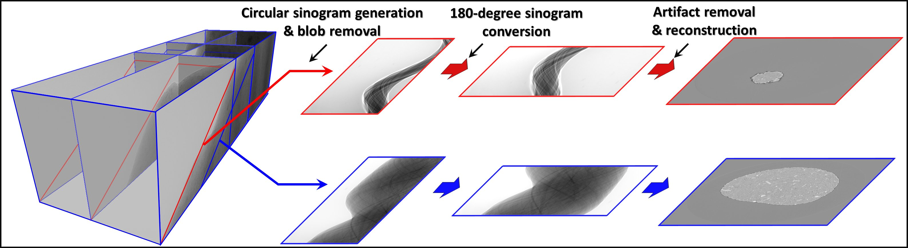
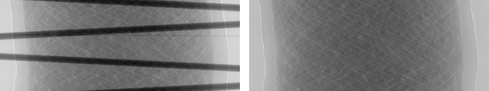
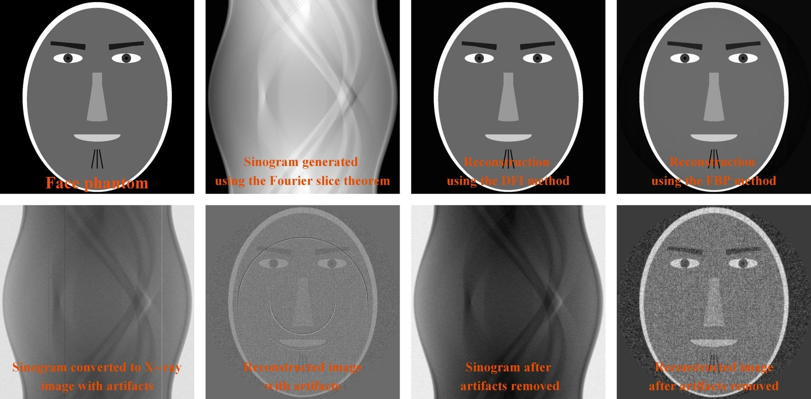
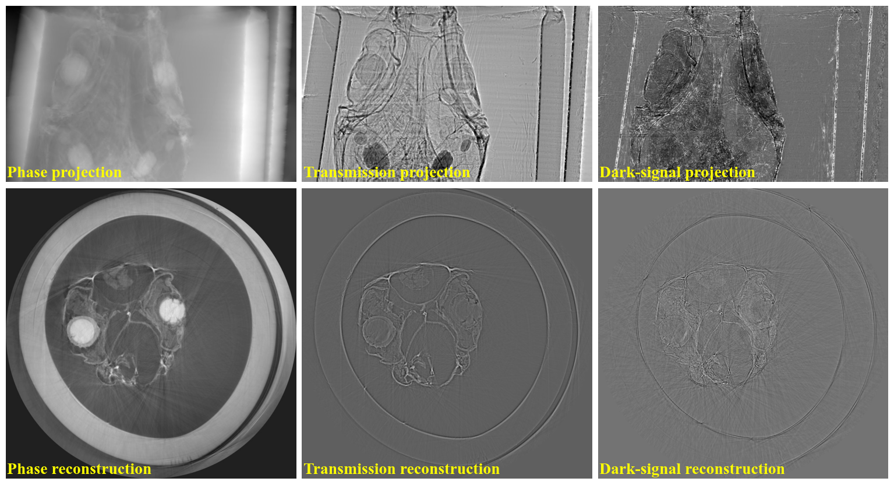
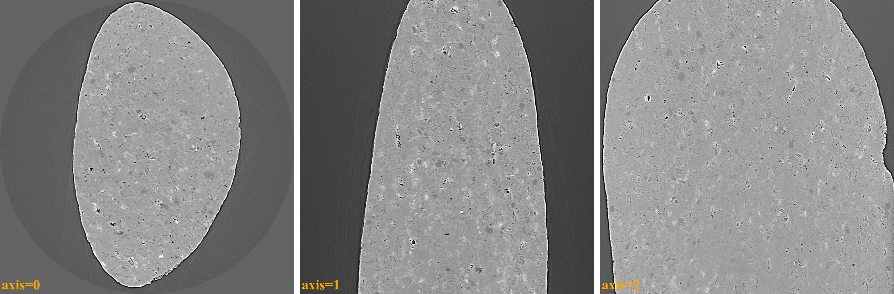

2. Features¶
2.1. Capabilities¶
Algotom is a lightweight package. The software is built on top of a few core Python libraries to ensure its ease-of-installation. Methods distributed in Algotom have been developed and tested at synchrotron beamlines where massive datasets are produced. This factor drives the methods developed to be easy-to-use, robust, and practical. Algotom can be used on a normal computer to process large tomographic data. Some featuring methods in Algotom are as follows:
Methods in a full data processing pipeline: reading-writing data, pre-processing, tomographic reconstruction, and post-processing.

Methods for processing grid scans (or tiled scans) with the offset rotation-axis to multiply double the field-of-view (FOV) of a parallel-beam tomography system.

Methods for processing helical scans (with/without the offset rotation-axis).
Methods for determining the center-of-rotation (COR) and auto-stitching images in half-acquisition scans (360-degree acquisition with the offset COR).
Some practical methods developed and implemented for the package: zinger removal, tilted sinogram generation, sinogram distortion correction, beam hardening correction, DFI (direct Fourier inversion) reconstruction, FBP reconstruction, and double-wedge filter for removing sample parts larger than the FOV in a sinogram.
Utility methods for customizing ring/stripe artifact removal methods and parallelizing computational work.
Calibration methods for determining pixel-size in helical scans.
Methods for generating simulation data: phantom creation, sinogram calculation based on the Fourier slice theorem, and artifact generation.
Methods for phase-contrast imaging: phase unwrapping, speckle-based phase retrieval, image correlation, and image alignment.
Methods for downsampling, rescaling, and reslicing (+rotating, cropping) 3D reconstructed image without large memory usage.

{kind=link}
{kind=link}
{kind=link}
{kind=link}
{kind=link}
2.2. Development principles¶
While Algotom offers a comprehensive range of tools for tomographic data processing covering raw-data reading, pre-processing, reconstruction, post-processing, and data saving; its development primarily focuses on pre-processing techniques. This distinction makes it a prominent feature among other tomographic software.
To ensure that the software can work across platforms and is easy-to-install; dependencies are minimized, and only well-maintained Python libraries are used.
To achieve high-performance computing and leverage GPU utilization while ensuring ease of understanding, usage, and software maintenance, Numba is used instead of Cupy or PyCuda.
Methods are structured into modules and functions rather than classes to enhance usability, debugging, and maintenance.
Algotom is highly practical as it can run on computers with or without a GPU, multicore CPUs; and accommodates both small and large memory capacities.